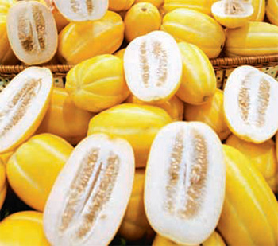

| 출생 | : 1979. 4. 12., 양자리, 양띠 |
| 나이 | : 44세 (만43세) |
| 소속사 | : 뉴에라프로젝트 |
| 신체 | : 165cm, 43kg, B형 |
| 데뷔 | : 1999년 1집 앨범 [I Believe] |
| No. | 앨범명 | 발매시기 | 대표곡 |
|---|---|---|---|
| 1집 | I Believe | 1999.11 | |
| 2집 | Never Again | 2001.2 | |
| 3집 | Made in Winter | 2001.11 | |
| 4집 | My Stay In Sendai | 2002.9 | |
| 5집 | This Time | 2003.8 | |
| 6집 | The Color of my Life | 2004.9 | |
| 7집 | Grace | 2006.1 | |
| 8집 | 내려놓음(Repackage) | 2007.11 | |
| 9집 | 9Th Dazzle | 2009.10 | |
| 10집 | Story | 2022.5 |
| 출생 | : 1977. 12. 31., 염소자리, 뱀띠 |
| 나이 | : 46세 (만44세) |
| 소속사 | : 피네이션, SB프로젝트, 유니버설 리퍼블릭 레코드 |
| 데뷔 | : 2001년 1집 앨범 [Psy From The Psycho World] |
| No. | 앨범명 | 발매시기 | 대표곡 |
|---|---|---|---|
| 1집 | Psy From The Psycho World | 2001.1 | |
| 2집 | 싸2 | 2002.1 | |
| 3집 | 3마이 | 2002.9 | |
| 4집 | 싸집 | 2006.7 | |
| 5집 | PSYFIVE | 2010.10 | |
| 6집 | 싸이6甲 Part.1 | 2012.7 | |
| 7집 | 칠집싸이다 | 2015.12 | |
| 8집 | PSY 8th 4X2=8 | 2017.5 | |
| 9집 | 싸다9 | 2022.4 |